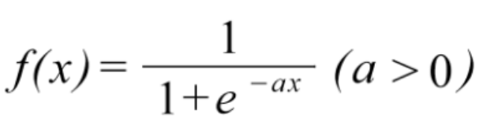

<シグモイド関数(sigmoid function)>
ニューラルネットワークでよく用いられる活性化関数のひとつはシグモイド関数です。シグモイド関数は以下の式で与えられます。
シグモイド関数のグラフは以下の通りです。

シグモイド関数は滑らかな曲線であり，入力に対して連続的に出力が変化します。入力が小さいときに出力は0に近く，入力が大きくなるに従い出力が1に近づくという構造をしています。そして，どんなに入力信号の値が小さくても，またどんなに入力信号の値が大きくても，出力信号の値を0から1の間に押し込めることができます。この関数は非線形関数であり，ニューラルネットワークの層を深くするために重要になります。